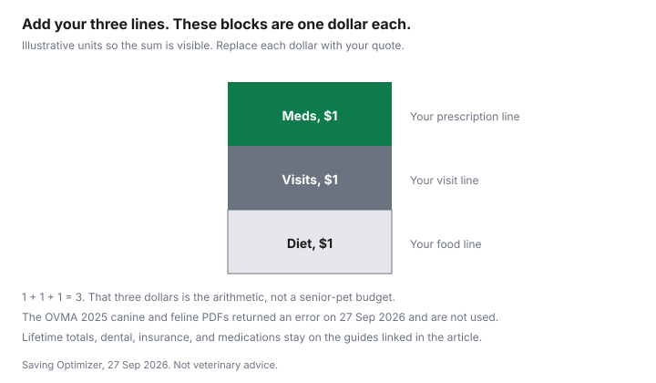

Pets · Canada
Senior Pet Costs in Canada: Bloodwork, Arthritis Meds and Budgeting
An older animal often adds repeat medications, more frequent estimates, and a food change on top of the ordinary year. This page was built to put the Ontario Veterinary Medical Association’s 2025 canine and feline cost sheets under those add-ons. Both PDFs returned an error on 27 Sep 2026 and did not open. Their dollar lines are not repeated from memory or from another article. The worksheet is yours to fill. The lifetime sheets, where this site has already cited them, stay on the dog-cost guide and the cat-cost guide. Not veterinary advice.
Key takeaways
- No senior monthly total is printed. The 2025 OVMA PDFs did not open on 27 Sep 2026.
- Bloodwork frequency, arthritis drug prices, and an insurance age cap were not on a page this guide could use. Those cells stay blank.
- The monthly method is three quotes added: medications, planned visits, and diet. Each line is a quote you were given, turned into a monthly figure.
- Dental estimates, cheaper medication fills, and whether insurance is worth the premium are other guides. Do not paste their figures in until you have re-read them.
- End-of-life invoices are not this month’s arthritis line. They are the end-of-life guide. If you need to talk to someone now, call or text 9-8-8.
What changes with age: more visits, screening and chronic conditions
The decision this page can support is bookkeeping, not a diagnosis. An adult year and a senior year are not the same envelope if the clinic adds screening or a chronic medication.
How many extra visits, and at what price, was not on the PDF that failed to open. Treat “seniors need bloodwork twice a year” as a sentence this guide will not make. Ask the veterinarian who has the file what they recommend for this animal, then put that recommendation’s estimate in the visit line. A general article cannot see the file.
Separate three kinds of spending before you look for a single “senior cost.” Planned care is the visit you booked. Recurring care is the medication or diet you buy every month whether or not you attend the clinic. Unplanned care is the emergency invoice. Mixing them produces a monthly number that looks calm and then fails in the month something acute happens. Unplanned care belongs in an emergency fund, discussed below, and in the emergency-bill guide for what to ask at intake. It does not belong inside the arthritis refill.
Senior wellness bloodwork and screening
Screening is a line item with a name, a date, and a price on an estimate. This guide does not have the OVMA wellness-profile line because the PDF did not open, and it will not substitute a clinic’s advertised panel from a city that was not checked.
When you call, ask what the panel includes, whether a urine test or a blood-pressure check is extra, and whether the price assumes a healthy animal or an animal that already has a diagnosis. Write the answer on the worksheet. If the clinic will not estimate, the visit line stays blank rather than becoming a round number from a forum.
Bring the previous results if you have them. Repeating a panel the last clinic already ran, because nobody transferred the file, is a cost you can sometimes avoid by asking. That is a records question. It is not a claim that every repeat test is waste. The veterinarian decides whether the last result is still useful. The vet-bill guide is the habit of asking for the estimate in writing before you authorise the work.
Arthritis management: meds, supplements, home changes
Pain medication, a joint supplement, and a ramp are three different purchases. No price for any of them checked 27 Sep 2026.
Do not budget “about the same as a human prescription.” Ask for the drug name, the size, and the refill interval, and price that exact product. In Ontario, a written prescription you can take elsewhere is the subject of the pet-medication guide. This page does not restate that guide’s legal status or any pharmacy price. A supplement the clinic sells is optional until someone shows you it is part of the plan. Put it on its own line so it cannot hide inside “meds.”
Home changes are floors, stairs, and where the animal sleeps. A rug or a ramp has a receipt. It is not a medical outcome. If you buy one, it goes under a household line, not under the drug. Weight and exercise are part of what you discuss with the veterinarian. This page will not prescribe a diet or a walk. Food, once a veterinarian has named the diet, is the diet line below, priced from the bag you can actually buy. Unit price on that bag is the per-day food guide if you want the method. No senior-diet price is listed here.
Dental and chronic disease budgeting
Dental work is often the large planned invoice in an adult year, and it is easy to pretend a senior animal will not need it. This guide did not open a dental fee schedule.
The dental guide is where a published cleaning figure lives. Use that guide’s source, not a number remembered from it, when you fill the visit line. Chronic disease, kidney disease, thyroid disease, heart disease, diabetes, is a set of refills plus monitoring. Each disease can have its own drug and its own recheck. Give each one a row. A single “chronic” lump hides the refill that renews next week.
Ask which monitoring is tied to the drug. A medication that requires a blood test before every refill is two lines, not one. If you stop the test to save the test fee, you are changing the plan, and that is a veterinarian’s decision. The saving this page will endorse is comparing fills and refusing a second copy of a product you already have, not skipping the monitoring the prescription depends on.
Insurance and the emergency fund for older pets
Whether a premium is worth paying is the pet-insurance guide. How to read exclusions, waiting periods, and reimbursement is the policy guide.
This page did not open an insurer’s age rule or a premium table, and it will not rank companies. The practical test is on paper: the monthly premium, what the policy says it will not cover for a condition the animal already has, and the deductible and limit. Beside it, the amount you can move each month into a savings account. If the exclusion removes the condition you are already treating, the premium is not paying for that condition. Price something else, or self-fund that line.
The emergency fund is not the insurance premium. It is cash for the invoice that arrives before a claim, or instead of one. Where to hold that cash is the high-interest savings guide. How to name the envelope so it is not spent on groceries is the zero-based budget guide and the sinking-fund guide. None of those guides knows your animal. End-of-life costs are a later invoice with their own prices. Keep them on the end-of-life guide. If grief is the urgent problem, call or text 9-8-8. That line is for people, and it is free.
Monthly budget worksheet
Enter monthly amounts. A drug you buy every eight weeks is the package price divided by two, only after you have the package price.
Do not annualise a number you do not have. The last column shows how to turn each quote into a monthly figure. Leave a line blank until you have a quote.
| Line | What to write | Monthly figure |
|---|---|---|
| Recurring medications | Each drug, the refill interval, and the price you were quoted. Blank if you have no quote. | Package price ÷ months one package lasts |
| Planned visits and screening | The estimate, divided by the number of months until the next one, if the clinic named both. | Estimate ÷ months until the next visit |
| Diet | Bag price, kilograms, and the feeding amount. No senior-diet price is listed here. | Bag price ÷ months one bag lasts |
| Monthly total of those three | Add only the lines you filled. | Sum of the filled lines |
| Not in that total | Insurance premium, emergency fund, dental if it is not this month’s visit, end-of-life. Separate envelopes. | Kept separate |

Sources & date stamps
- Ontario Veterinary Medical Association, Cost of Care Canine 2025 PDF and Cost of Care Feline 2025 PDF. Both addresses returned an error on 27 Sep 2026. No figure from those sheets is used on this page.
- No arthritis price, bloodwork interval, senior-diet price, or insurer age cap was opened.
- 9-8-8 is the Canadian suicide-prevention line, named here for people who are grieving. It is not a veterinary service.
Frequently asked questions
How much does senior pet care cost?
This page does not print a senior total. The Ontario Veterinary Medical Association’s 2025 canine and feline cost-of-care PDFs did not open on 27 Sep 2026, so their adult and first-year figures are not copied in. Use the dog-cost and cat-cost guides for the sheets those articles already cite, and use the worksheet here for the lines your own clinic quotes. Add only the numbers on those quotes.
How often should a senior pet have bloodwork?
No interval was on a page that opened for this guide. The OVMA sheets did not load, and they are not treated as a senior schedule. Ask your veterinarian what that animal’s age and history justify, and write the visit down when you have the estimate. This page is not veterinary advice and does not set a testing calendar.
What does arthritis medication cost?
No arthritis drug price was on a page checked 27 Sep 2026. A forum range would be an invented number, so it is not here. Ask the clinic for a written prescription and a price, then compare a pharmacy fill the way the pet-medication guide describes. Do not add a supplement price this page did not see.
Is it too late to insure a senior pet?
The pages checked for this guide do not state an age cutoff. Whether a policy will exclude a condition the animal already has is a question for the contract, and the policy guide is where those clauses are unpacked. This page does not rank insurers and does not say a senior animal should or should not be enrolled. Price the premium beside the fund you can actually save.
How do I budget for an older pet?
Split the month into recurring medications, planned visits, and diet, then add the three quotes you were given. The chart shows how the three lines fit together; it carries no dollar amounts. Park the real total where you park other irregular bills, and keep a separate line for an emergency invoice and for end-of-life costs, which have their own guides.
Researched and drafted with AI assistance and fact-checked against official Canadian sources. How we create content.